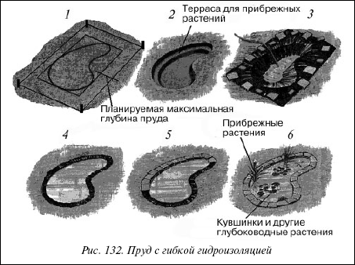

Пруд с гибкой гидроизоляцией.

Для пруда больших размеров лучше всего использовать гибкий изолирующий материал, тогда вы не будете ограничены в выборе очертаний и размеров пруда, и такое покрытие для дна несложно перевезти и уложить. Начинать строительство нужно в сухую погоду весной. Если планируется создание постоянного пруда, нужно стараться купить пленку из бутилкаучуковой резины. Она дороже других материалов, но самая долговечная, и любые порезы на ней легко залатать. При недостатке средств купите качественную поливинилхлоридную пленку. Для временных прудиков, в которых разводят мальков или куда переносят рыб и растения при чистке постоянного водоема, вполне годится дешевая полиэтиленовая пленка.

Рис. 132. Пруд с гибкой гидроизоляцией
Вычислять размеры пленки рекомендуется только после того, как котлован для пруда выкопан, – тогда замеры будут более точными. Если же за подсчеты берутся заранее, то делают это с помощью складного метра, прибавив к длине и ширине дважды по 30 см на края и удвоив предусмотренную глубину.
Пример расчета размеров пленки:
Допустим, что вы хотели бы иметь пруд размером 450x350 см при глубине 65 см.
Расчет материала:
450 см (длина) + 2x65 см (глубина) + 2x30 см (край) = 640 см;
350 см (ширина) + 2x65 см (глубина) + 2x30 см (край) = 540 см.
Итак, пленка для пруда должна иметь размеры 640x540 см.
Если требуется сварить полотнища пленки, то тут есть два варианта: диффузионная сварка с помощью растворителя и термическая сварка. При первом способе необходимы: растворитель, жидкая пленка, силиконовый роллер (прикат-чик), опрыскиватель и специальная кисть. Полотнища пленки кладут так, чтобы один край примерно на 5 см заходил на другой. С помощью специальной кисточки намазывают края растворителем, прикатывают их роллером, сильно нажимая. Полотнища оказываются крепко склеенными. Работать надо очень тщательно и аккуратно, не допуская образования воздушных полостей. Оптимальная температура – около 15 °C. С помощью жидкой пленки из опрыскивателя уплотняют швы, когда они высохнут. Но если края пленки были плохо склеены с помощью растворителя, жидкая пленка не всегда может помочь. Тем, кто не доверяет этому способу, можно посоветовать обратиться к готовому склеенному материалу (ведь самим трудно обеспечить достаточное давление). В этом случае у вас будет гарантия надежности швов. Термическая сварка с промышленной сушкой применяется большей частью при закладке очень больших прудов (пленку сваривают на месте, так как целиком ее трудно обрабатывать).
Строительство водоемаДля закладки пленочного пруда предварительно устраивают песчаное основание.
1. Обозначить контуры пруда,используя гибкий шланг или веревку с колышками.
2. Выкопать котлован.С помощью лопаты прорежьте дерн по разметке и удалите грунт на глубину примерно 30 см – до уровня будущей террасы. Затем разметьте и удалите грунт из центральной части пруда, оставив по краям террасу шириной 30 см. Глубину пруда делайте не меньше 60 см. Но яма должна быть значительно глубже: 10 см пойдет на песчаное ложе, несколько миллиметров – на укладку нетканого материала для защиты пленки и около 20 см – на почвенный грунт для посадки водных растений. При выкопке надо принимать во внимание то, что береговая часть должна составлять примерно четверть всей водной поверхности (при глубине пруда 20–40 см), а ширина береговой зоны от 20 до 50 см. Не следует делать берега слишком отвесными и склон под углом более 45°. В то же время берега не должны быть пологими. В местах с более крутыми берегами можно использовать маты, которые способствуют укреплению берегов и позволяют сажать растения даже там, где берега почти отвесные. Удалите из котлована корни сорняков и камни и обратите особое внимание на то, чтобы пленка была надежна защищена от всяких повреждений. Возможно, камни с течением времени не останутся неподвижными в земле и могут повредить пленку. Решение этой проблемы было найдено – это нетканый материал для пруда. Этот дешевый и долговечный материал достаточно легок и пластичен – его можно равномерно без особого труда разложить на любой поверхности. Он тонок (всего несколько миллиметров толщиной), эластичен, не изнашивается. Насыпьте на стенки и дно слой влажного песка толщиной 2,5 и 10 см соответственно.
3. Уложить гидроизоляционное покрытие.Накройте яму пленкой, не вдавливая ее внутрь. Оставьте часа на два – от тепла пленка станет более эластичной. В пленке не должно быть складок – ведь их уже не обнаружишь, когда будет налита вода. Проверьте, как она уложена относительно центра ямы, и придавите края камнями. Затем начинайте постепенно наполнять пруд водой из шланга – пленка прогнется, обозначив контура пруда. Важно, чтобы пленка имела определенный свободный запас и под тяжестью воды плотно прилегала ко дну пруда. По мере того, как уровень воды будет подниматься, по одному убирайте камни, не мешая пленке постепенно опускаться и прижиматься к бортам и дну ямы.
4. Закрепить края пленки.На углах заложите края пленки в аккуратные складки. Выключите воду, когда ее уровень будет на 5 см ниже уровня земли. Уберите оставшиеся камни. Подрежьте края пленки ножницами, оставляя полоску шириной 15 см, по всей длине внешнего края заложите аккуратные мелкие складки. Натяните и деревянными или металлическими шпильками прикрепите края пленки к земле.
5. Оформление края пруда.Прежде чем приступать к оформлению краев пруда, необходимо оставить пленку в покое на несколько дней, чтобы она «осела», то есть под давлением воды полностью приобрела форму дна, чтобы исчезли все пустоты. Отвесные стенки пруда с обрушивающейся землей раздражают многих садоводов. Отвесные стенки будут иметь вполне естественный вид с помощью имеющихся в продаже специальных матов (циновок). Идет ли речь о новом или уже существующем пруде, эти маты подойдут в любом случае. На циновку можно поместить мелкий гравий или бедную питательными веществами землю. Этот материал дает водным и прибрежным растениям опору, а также питание. Образующийся на нем зеленый ковер из растений укрепляет берега, не дает им возможности обвалиться. Таким образом вы сможете естественно оформить береговую зону пруда. Укладка матов очень проста. Их помещают на краях пруда, опуская нижнюю часть примерно на 35 см. На расстоянии 50 см от пруда вкапывают крючки для закрепления. Но это надо делать осторожно, не повредив пленки. Затем пленку и маты в береговой зоне покрывают растительным субстратом. Часть матов, которая опущена в пруд, нужно покрыть песчанистой землей с примесью мелкого гравия. Годятся торф и размельченная глина. Есть также другой вариант оформления края пруда – вымостить их плиткой, природным камнем и т. п. так, чтобы они нависали над водой примерно на 5 см. Камни должны быть скреплены известковым раствором. Укладывайте их по уровню, строго горизонтально. Промежутки между камнями заполняйте каменной крошкой или кусочками плитки, чтобы полностью прикрыть края пленки. Также в продаже появилась очень практичная новинка, разрешающая все проблемы с обеспечением чистоты берегов – натуральные кокосовые маты (циновки). Сплетенные из кокосового волокна, в нижней части они имеют карманы, которые наполняют землей. Таким образом, можно посадить влаголюбивые культуры даже там, где отвесные гладкие стенки раньше не позволяли этого сделать.
У пруда с плоскими берегами пленку в сухой береговой зоне можно покрыть толстым слоем гравия и кое-где расположить природные камни. При этом самые большие камни надо разместить не отвесно, а как бы в положении лежа и слегка наклонно по отношению к зрителю (рассматривают их обычно с противоположного берега). Если пруд окружен газоном, подкапывают на глубину 8-10 см, чтобы спрятать края пленки. При любом оформлении краев важно обратить внимание на то, чтобы в сторону сада был легкий наклон, тогда вода или органические вещества не станут вымываться в пруд
6. Высаживание растений и запуск рыб.Сначала в пруд высаживают растения, затем запускают рыб. Скрепляя камни, нужно следить, чтобы известковый раствор не попал в воду – известь губительна для рыб.